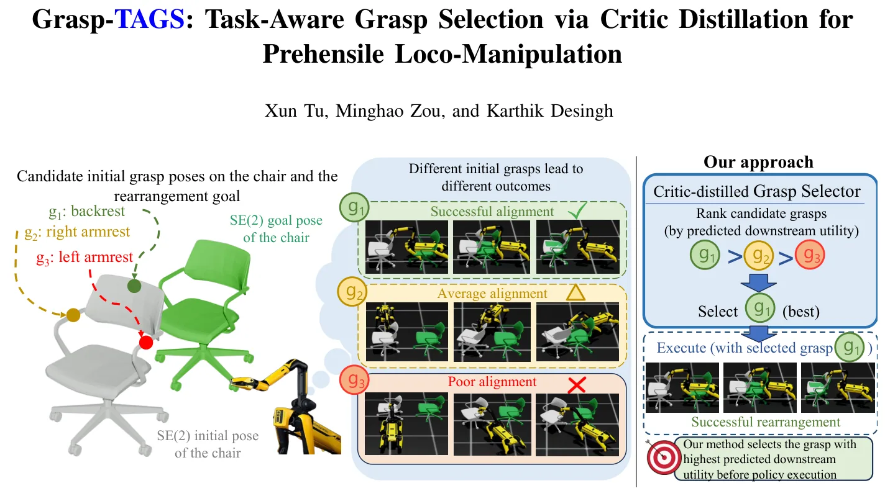
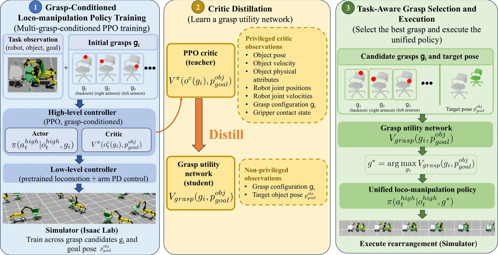
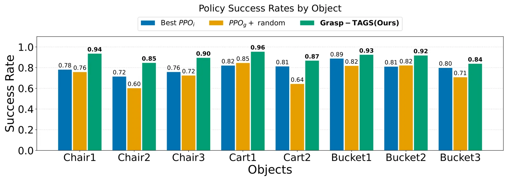

O Problema da Escolha Inicial em Loco-Manipulação
Loco-manipulação é a capacidade de um robô móvel coordenar sua locomoção e manipulação para interagir fisicamente com objetos ao longo de horizontes temporais longos. Isso é crucial para aplicações como automação de armazéns e robótica de serviço, onde objetos grandes e pesados, como cadeiras, carrinhos ou bagagens, precisam ser rearranjados. Diferente de pegar e carregar, esses objetos geralmente permanecem em contato com o solo, criando dinâmicas complexas de interação entre robô, objeto e ambiente.
Os métodos tradicionais baseados em modelo, como o Controle Preditivo por Modelo (MPC), exigem conhecimento preciso das dinâmicas do sistema para planejar movimentos. Já as abordagens baseadas em aprendizado, como Aprendizado por Reforço (RL), reduzem essa necessidade, mas frequentemente assumem que a configuração inicial do agarramento (grasp) é fixa ou predefinida. Essa suposição é restritiva, pois diferentes agarramentos, mesmo que geometricamente estáveis, podem levar a resultados drasticamente diferentes na manipulação subsequente.
A configuração inicial afeta a rearrumação ao alterar os pontos de contato e as configurações do braço robótico. Isso muda as forças e movimentos que o robô pode aplicar efetivamente durante empurrões ou arrastos, influenciando a controlabilidade do objeto e o resultado final da tarefa. Portanto, a escolha do agarramento inicial deve ser tratada como uma variável dependente da tarefa, não como um dado fixo.
Os autores, da Universidade de Minnesota, propõem o Grasp-TAGS, um framework de seleção de agarramento consciente da tarefa para rearrumação de objetos grandes. O objetivo é avaliar candidatos a agarramentos com base na sua utilidade esperada para a tarefa downstream e selecionar o mais adequado antes que qualquer contato físico ocorra.

A Arquitetura do Grasp-TAGS
O núcleo do Grasp-TAGS é a ideia de que um único agente de RL pode aprender a lidar com múltiplas configurações iniciais de agarramento, e que o 'crítico' desse agente pode ser usado para prever o sucesso futuro de cada agarramento candidato. O processo começa com o treinamento de uma política hierárquica baseada em PPO (Proximal Policy Optimization) que executa a loco-manipulação usando um controlador de baixo nível pré-treinado.
Em vez de treinar políticas separadas para cada agarramento possível, os autores treinam uma política unificada (PPOg) que opera sobre várias configurações iniciais de agarramento. Isso permite que a política e seu crítico aprendam as dependências de longo prazo entre a configuração inicial do agarramento e o sucesso da tarefa. O crítico, que estima o valor esperado de um estado, acaba atribuindo valores diferentes a estados iniciais associados a diferentes agarramentos, capturando implicitamente a qualidade de cada escolha.
Em seguida, ocorre a destilação. O crítico treinado é destilado em uma rede de utilidade de agarramento (grasp utility network) leve. Essa rede é treinada para prever a utilidade downstream de um agarramento candidato usando apenas a configuração do agarramento e a informação do objetivo (goal), sem necessidade de executar a tarefa completa. Isso cria um seletor de agarramento rápido e eficiente.
Na inferência, o sistema gera candidatos de agarramento geometricamente viáveis. A rede destilada avalia cada um, classificando-os pela utilidade prevista. O agarramento com a maior utilidade é selecionado e a política de manipulação downstream é executada a partir dessa configuração. A seleção ocorre antes do contato físico, permitindo que o robô evite configurações iniciais que levem a falhas futuras.

Detalhes da Implementação e Treinamento
O treinamento da política PPO unificada é feito em um ambiente de simulação. A política é exposta a múltiplas configurações iniciais de agarramento durante o treino, forçando-a a aprender uma estratégia robusta que generaliza entre diferentes pontos de contato. O crítico aprendido armazena o conhecimento sobre quais configurações iniciais são mais favoráveis para alcançar o objetivo final, considerando a dinâmica complexa do objeto e do ambiente.
A destilação do crítico para a rede de utilidade de agarramento é um passo crucial. A rede de utilidade é projetada para ser leve, permitindo que a seleção de agarramento seja feita rapidamente antes da execução. Ela toma como entrada apenas a configuração do agarramento candidato e a pose objetivo do objeto, sem precisar de informações privilegiadas sobre as propriedades físicas exatas do objeto ou do atrito do ambiente.
Essa abordagem elimina a necessidade de modelos dinâmicos precisos ou estimativas complexas de propriedades físicas no momento da seleção. A utilidade prevista pela rede destilada serve como um proxy para o sucesso da tarefa downstream. Ao selecionar o agarramento com a maior utilidade, o sistema maximiza a probabilidade de completar a rearrumação com sucesso.
O framework é projetado para ser agnóstico ao tipo específico de loco-manipulação, focando na fase de seleção inicial. A política de manipulação downstream, que executa o movimento do objeto até o objetivo, é treinada separadamente e assume que o agarramento já foi selecionado. Isso modula o problema, permitindo que a seleção de agarramento seja otimizada independentemente da política de controle de baixo nível.
Avaliação Experimental
Os autores avaliaram o Grasp-TAGS em simulação, comparando-o com duas abordagens de linha de base: políticas individuais treinadas para cada agarramento (PPOi) e uma política unificada com seleção aleatória de agarramento (PPOg + Random). O objetivo era medir a taxa de sucesso, o erro posicional planar, o erro angular e o erro angular de keypoints para rearrumação de objetos grandes, como cadeiras, carrinhos e baldes.
Os resultados mostram que a configuração inicial do agarramento afeta substancialmente o desempenho da loco-manipulação. Políticas individuais (PPOi) podem superar a seleção aleatória, mas cada política é especializada em uma única configuração de interação robô-objeto. Como a performance relativa dos agarramentos varia entre diferentes objetivos de rearrumação, a seleção explícita baseada na tarefa é necessária.
O Grasp-TAGS superou tanto as políticas fixas quanto a seleção aleatória em todas as categorias de objetos avaliadas. Para a cadeira-1, o Grasp-TAGS alcançou uma taxa de sucesso de 93,65%, comparado a 75,88% para a seleção aleatória e entre 69,02% e 78,20% para as políticas individuais de agarramento único. O método também reduziu o erro angular em cerca de 60%, indicando que a seleção adequada da configuração de interação é benéfica para tarefas que exigem tradução e rotação coordenadas do objeto.
Essa tendência foi observada para todos os outros objetos, incluindo carrinhos e baldes. O Grasp-TAGS alcançou a maior taxa de sucesso em todos os 4096 ambientes paralelos usados nos experimentos. Os resultados quantitativos confirmam que tratar a escolha do agarramento como uma variável dependente da tarefa melhora significativamente a confiabilidade da loco-manipulação.

Análise de Resultados e Limitações
Os dados mostram que o Grasp-TAGS não apenas aumenta a taxa de sucesso, mas também reduz os erros de posicionamento e orientação final. Para a cadeira-1, o erro angular foi reduzido de 0,2407 rad (PPOg + Random) para 0,0712 rad (Grasp-TAGS). Isso sugere que a seleção de agarramento consciente da tarefa é particularmente importante para tarefas que requerem alinhamento preciso.
Apesar dos resultados promissores em simulação, há limitações a serem consideradas. O trabalho foi conduzido inteiramente em ambiente simulado. A transferência para o mundo real pode ser desafiadora devido a diferenças na dinâmica, atrito e incertezas sensoriais. Os autores mencionam que o trabalho futuro incluirá a avaliação em objetos domésticos adicionais e a implantação real na plataforma SPOT.
Outra limitação implícita é a dependência da qualidade da política PPO unificada treinada. Se a política não aprender adequadamente a generalizar entre as configurações de agarramento, o crítico pode fornecer estimativas de utilidade imprecisas. Além disso, o número de candidatos de agarramento a serem avaliados pode crescer com a complexidade do objeto, embora a rede leve minimize esse custo.
O framework assume que o objetivo final (pose do objeto) é conhecido e estático durante a seleção do agarramento. Se o objetivo mudar dinamicamente, a rede de utilidade precisaria ser reavaliada. Isso é consistente com tarefas de rearrumação onde o destino é predefinido, mas pode não se aplicar a cenários de interação mais fluidos e reativos.
Conclusão
O Grasp-TAGS apresenta uma abordagem eficaz para a seleção de agarramento em loco-manipulação de objetos grandes. Ao treinar uma política PPO unificada e destilar seu crítico, os autores criam um seletor de agarramento leve que prevê a utilidade downstream com base apenas na configuração inicial e no objetivo.
Os resultados em simulação mostram que essa abordagem supera políticas com agarramento fixo ou aleatório, melhorando a taxa de sucesso e reduzindo erros de alinhamento. O framework elimina a necessidade de modelos dinâmicos precisos ou estimativas de propriedades físicas no momento da seleção, tornando-o mais prático para implementação.
Este trabalho destaca a importância de tratar a escolha do agarramento como uma decisão dependente da tarefa, em vez de um pré-requisito fixo. Ao selecionar o agarramento com maior utilidade prevista antes do contato, o robô pode evitar configurações iniciais que levam a falhas, aumentando a confiabilidade da loco-manipulação.
O trabalho futuro se concentrará na validação em objetos domésticos reais e na implantação em robôs físicos, como o SPOT. Isso será crucial para demonstrar a robustez do método em ambientes não estruturados e com incertezas dinâmicas reais.
O que fica
- Agarramentos geometricamente estáveis não garantem sucesso; a escolha depende da tarefa.
- Grasp-TAGS treina um único PPO unificado e destila seu crítico para prever utilidade.
- A seleção ocorre antes do contato físico, eliminando a necessidade de modelos dinâmicos precisos.
- Resultados em simulação mostram aumento de ~10% na taxa de sucesso versus políticas fixas.
Paper original: Grasp-TAGS: Task-Aware Grasp Selection via Critic Distillation for Prehensile Loco-Manipulation
Comentários
Nenhum comentário ainda. Seja o primeiro.